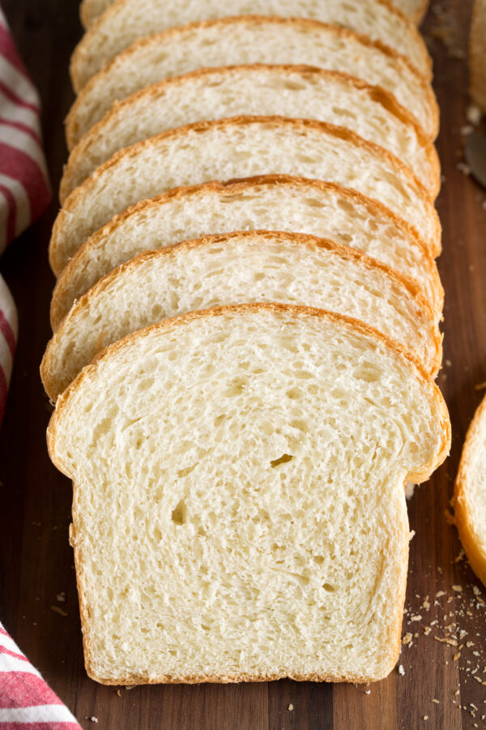

White Bread

Description:
Homemade White Bread.
Soft and fluffy, chewy and tender, perfectly delicious, basic bread recipe. A comforting classic that's perfect with butter, used for a homestyle sandwich, or served up as morning toast with jam.
Ingredients
- All-purpose flour.
- Active dry yeast.
- Table salt.
- Butter.
- Milk.
- Granulated sugar.
- Warm water.
Steps:
- Proof yeast in a mixer bowl with water and sugar.
- Mix in remaining sugar, salt, milk and about 2/3 of the flour using paddle attachment.
- Switch to hook attachment and mix in remaining flour.
- Let knead until soft, elastic and smooth.
- Transfer dough to oiled bowl, cover and let rise until double in volume.
- Press dough down, then pat and stretch into a rectangle on a floured surface.
- Roll dough up into a log.
- Transfer to a loaf pan, cover and let rise until it's about 2-inches above the height of the bread pan.
- Bake until golden brown and hollow sounding when tapped on top.
- Let cool and slice.
What temperature to bake bread to?
If you have an instant read thermometer (which is recommend for testing liquid temps used in the recipe) you can test center of loaf for doneness. For this type of bread it should be 195 degrees Fahrenheit in center.
Can I Make Dough By Hand?
Yes. If you don't own an electric stand mixer this white bread can also be done the old fashioned way;just by using a mixing bowl and a wooden spoon. Mix in as much flour as you can with the spoon then as it starts to get heavy, knead in the remaining flour by hand.
Back to top.
Back to main page.